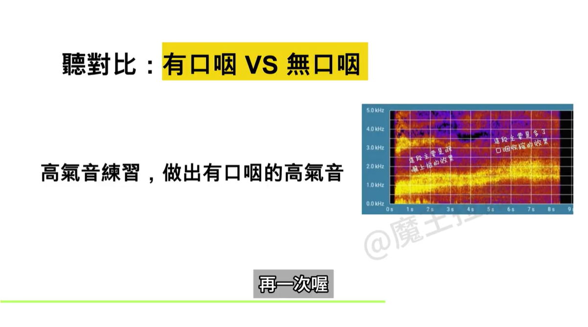
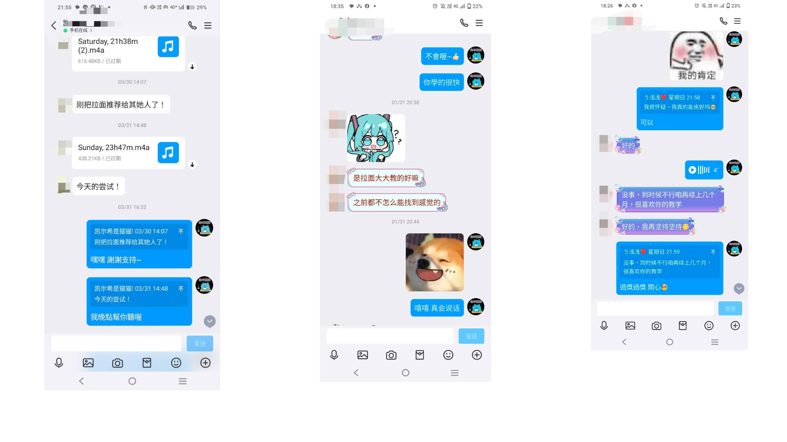
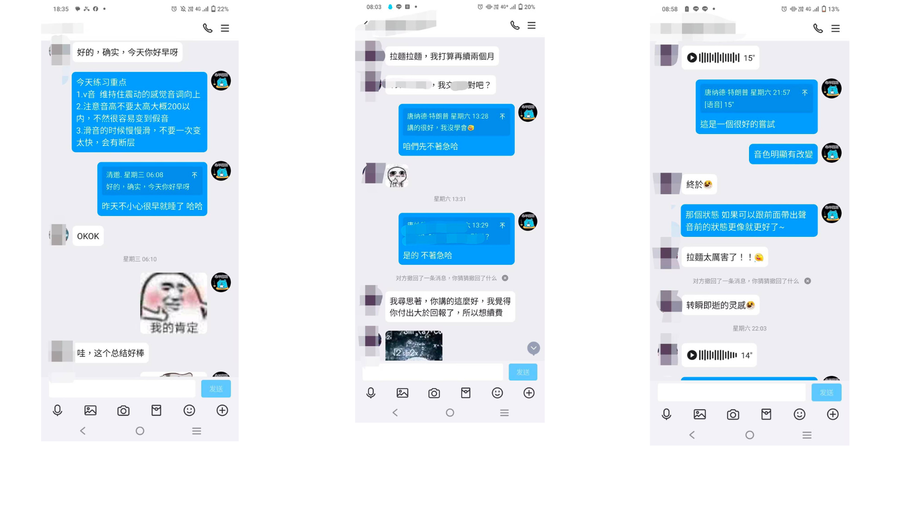
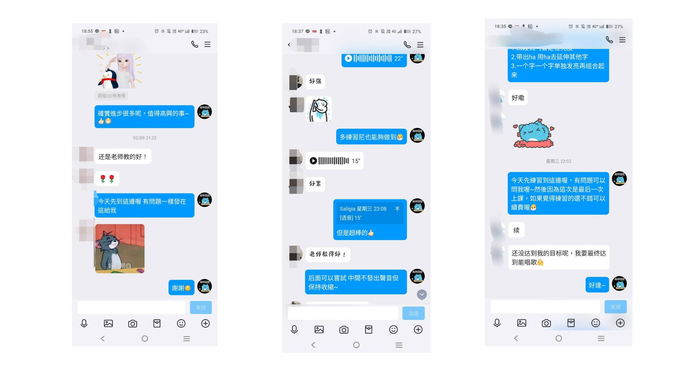
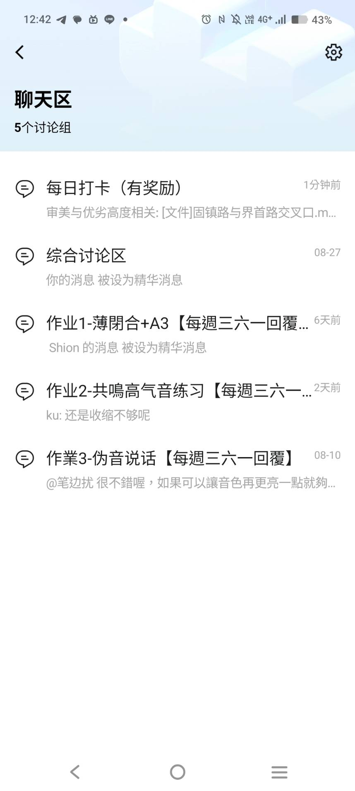

声带
变长、变厚
理解声音改变的原理，找到清楚的练习方向。
从系统自学、预录跟练，到针对性语音反馈。
大多数伪音教学都会教你：
结果你练了一堆，声音却依然没什么改变。
听起来，还是很男性化。
为什么？
因为要把伪音学好，得从根本下手——也就是理解「男女声音的底层逻辑」。
不是拼命做加法，
而是只在需要改变的地方，做对改变。
你仔细想想：
男生和女生的声音，从什么时候开始出现明显差异？
——青春期过后青春期后，声带会变长、变厚。
但很少人知道，「空间的改变」对声音影响更大。
变长、变厚
甲状软骨下降，空间变大
变得更宽
而较大的空间，会削弱声音中的高频，让声音听起来越来越「男性化」。
所以，我们真正需要做的，是逆转这些因青春期而改变的结构性关键，才能找回自然、真实的女声。
音高上去了，自然感却没跟上。
昨天做得到，今天又找不回来。
越用力维持，声音越刻意。
方法一直换，不知道先练什么。
听得出不对，找不到问题在哪。
我是拉麵，ramenvoicelab的创办人。从 2019 年开始研究与实作伪音训练，至今超过六年。在实际尝试大量坊间教学后，我发现多数方法未说清楚声音改变所对应的生理结构，学习只能靠感觉，难以重现。
因此，我与朋友共同查阅声学与发声生理结构相关的英文论文，研究 TransVoiceLessons ,seattle voicelab 与多位嗓音女性化领域权威老師的训练方式，并透过实际训练与教学反复验证。让你清楚知道每一步在练什麽、为什麽要练，以及怎样才算真的做对
我们专注于 跨性别声音训练，不是泛用课程。
课程基于科学发声原理，结合多年研究与教学经验，
打造出 C.O.R.E 系统化训练法 ——
让你在安全、可控的方式下，逐步建立 稳定、自然 的声音。

想自己安排练习，选 2.0；希望打开视频就能跟练，选 3.0。
像备齐健身器材，按自己的节奏练。
录播课程 · 永久回看
薄厚切换、高气音、抬喉与口咽调整、实声、咬字与说话。
适合需要手把手带，打开视频就能跟练。
原价 ¥6,000省 ¥1,000
＋ 完整 2.0 课程单购 ¥690
＋ 6 个月群文字答疑
提交音档与问题，老师亲录语音反馈。
指出卡点，告诉你下一步怎么练。




可以！课程从零开始，讲解清楚、练习简单，适合新手一步步练起来。
可以练出接近自然女声的音色，日常说话时别人通常不会听出是男音。
每个人的基础不同，但大部分学员在 4～6 个月内可以练到日常说话听起来像女生。
伪音训练就像学唱歌或弹钢琴一样，需要大量练习和时间积累，但只要方向正确，进步是一定看得见的！
平均建议一天 15～30 分钟。稳定比一次练很久更重要。
2.0 包含 2 个月群内文字答疑；3.0 包含 6 个月群内文字答疑。
需要分析练习音档、明确卡点与下一步练习方向时，可使用所购或赠送的深度答疑次数。每次由老师亲自录制语音反馈。
3.0 包含的 6 次深度答疑，须自 3.0 课程完整更新完成日起一年内使用完毕。